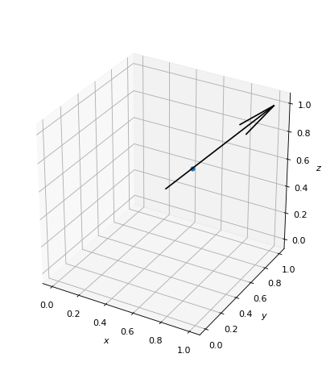

Parametric Line¶
-
class
owcsimpy.geoobjects.bases.paramline_py.ParamLine_py(P0, P1)[source]¶ A 3D parametric line.
- Parameters
- P0: ndarray(3,)
A tail point.
- P1: ndarray(3,)
A head point.
Notes
A parametric line, \(l(t)\), is defined as:
\[l(t) = P_0 + \mathbf{u} t, \mathrm{where}\ \mathbf{u} = P_1-P_0.\]Examples
>>> import numpy as np >>> import matplotlib.pyplot as plt >>> from owcsimpy.geoutils.draw import draw >>> from owcsimpy.geoobjects.bases.paramline_py import ParamLine_py as Line >>> # Generate a line l >>> l = Line(np.array([0.5,0.5,0.5]),np.ones(3)) >>> # Draw >>> fig,ax = draw(lines=l,figsize=(5,6)) >>> # Get a point at t = 0.25 >>> P = l.getPoint(0.25) >>> print("Point at t=0.25 is {}".format(P)) Point at t=0.25 is [0.625 0.625 0.625] >>> # Draw >>> x,y,z = P >>> ax.scatter(x,y,z) >>> plt.show()
- Attributes
- P0
- P1
- u: ndarray(3,)
Show the direction of the parametric line